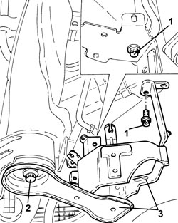
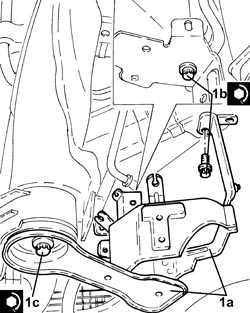

4130B32 POWER STEERING PUMP SUPPORT - R R
- Path
- Procedures > 41 STEERING UNIT > 4130 POWER STEERING > 4130B POWER STEERING HYDRAULIC SYTEM > 4130B32 POWER STEERING PUMP SUPPORT - R R
- Kind
- repair procedure (removal / refitting; the operation number is the code)
- Applies to
- all engines; all production periods
- Interactive page
- https://sloeber94.github.io/elrnDB-fCrm/en/#/194000533
Applies to: engines: 2.2; all production periods
 Removing
Removing
 Refitting
Refitting- Position the vehicle on a lift.
- Make sure that the ignition key is in the OFF position, then disconnect the battery terminal (-).
Description | Connector | |
|---|---|---|
- | Battery |
Op. 4450B04 RIGHT FRONT WHEEL - R.R
Op. 7055B66 ENGINE COMPARTMENT DUST COVER IN RIGHT FRONT WHEEL ARCH - R.R.
Op. 7055B91 RIGHT FRONT WHEEL ARCH LINER - R.R.
Op. 4130B25 POWER STEERING PUMP ASSEMBLY R R FOR VERSIONS WITH AIR CONDITIONER
1. Undo the bolts fixing the power steering pump mount to the bodyshell.
2. Undo the bolt securing the power steering pump mount to the front suspension frame.
3. Working from the wheel arch, remove the power steering pump mount.

Applies to: engines: 2.2; all production periods
Refitting
Removing1. Place the power steering pump mount (1a) in its housing and secure it tightening the bolts (1b) and (1c) to the recommended torque.
Component | Fastening | dia | Value (daNm) | Validity |
|---|---|---|---|---|
Power steering electric pump mounting | Bolt | M8 | (bodyshell side) 1.8 - 2.6 | 2.2 |
Component | Fastening | dia | Value (daNm) | Validity |
|---|---|---|---|---|
Front suspension frame | Front-rear bolts (to replace) | M12 | (bodyshell side) 9.0 - 11.0 + 90° |

Applies to: engines: 2.2; all production periods
Op. 4130B25 POWER STEERING PUMP ASSEMBLY R R FOR VERSIONS WITH AIR CONDITIONER
Op. 7055B91 RIGHT FRONT WHEEL ARCH LINER - R.R.
Op. 7055B66 ENGINE COMPARTMENT DUST COVER IN RIGHT FRONT WHEEL ARCH - R.R.
Op. 4450B04 RIGHT FRONT WHEEL - R.R
- Connect the negative battery terminal.
Op. 0010T71 POWER STEERING FLUID CHECK LEVEL AND TOP UP IF NECESSARY
Op. 0010T75 HYDRAULIC POWER STEERING SYSTEM BLEED AIR
- Remove the vehicle from the lift.
Applies to: engines: 1.8, 1.9 JTD 8v, 1.9 JTD 16v, 2.4 JTD 20v; all production periods
Removing
RefittingOp. 7055B54 UNDER ENGINE PROTECTION/GUARD - R.R.
Op. 1076B72 INTERMEDIATE EXHAUST PIPE WITH HOSE SECTION - R+R
Op. 1008C34 BRACKET ON GEARBOX FOR LOWER REACTION ROD - R.R.
Op. 4130B25 POWER STEERING PUMP ASSEMBLY R R FOR VERSIONS WITH AIR CONDITIONER
Applies to: engines: 1.8, 1.9 JTD 8v, 1.9 JTD 16v, 2.4 JTD 20v; all production periods
Refitting
RemovingOp. 4130B25 POWER STEERING PUMP ASSEMBLY R R FOR VERSIONS WITH AIR CONDITIONER
Op. 1008C34 BRACKET ON GEARBOX FOR LOWER REACTION ROD - R.R.
Op. 1076B72 INTERMEDIATE EXHAUST PIPE WITH HOSE SECTION - R+R
Op. 7055B54 UNDER ENGINE PROTECTION/GUARD - R.R.
Op. 0010T71 POWER STEERING FLUID CHECK LEVEL AND TOP UP IF NECESSARY
Topics linked from this page (10)
- 0010T71 POWER STEERING FLUID CHECK LEVEL AND TOP UP IF NECESSARY
- 0010T75 HYDRAULIC POWER STEERING SYSTEM BLEED AIR
- 1008C34 BRACKET ON GEARBOX FOR LOWER REACTION ROD - R.R.
- 1076B72 INTERMEDIATE EXHAUST PIPE WITH HOSE SECTION - R+R
- 4130B25 POWER STEERING PUMP ASSEMBLY R R FOR VERSIONS WITH AIR CONDITIONER
- 4450B04 RIGHT FRONT WHEEL - R.R
- 7055B54 UNDER ENGINE PROTECTION/GUARD - R.R.
- 7055B66 ENGINE COMPARTMENT DUST COVER IN RIGHT FRONT WHEEL ARCH - R.R.
- 7055B91 RIGHT FRONT WHEEL ARCH LINER - R.R.
- A001 BATTERY